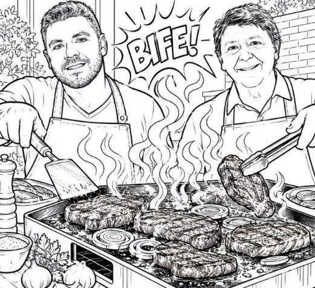

O segredo do Bife de Contrafilé na Chapa
“O bife acebolado da vó Zelinda é especial! Ela faz com tanto carinho que já tem destino certo: vai para o neto Fabinho e o sobrinho Aguinaldo, que sabem bem que comida de vó tem um sabor que não se encontra em nenhum outro lugar!”

A chapa precisa estar bem quente. A carne, ser de qualidade. E o bife, deixado em paz, sem aquela mania de mexer a todo instante, como se precisasse de ajuda para ficar pronto. É assim que se forma a crosta dourada por fora, enquanto a carne conserva seus sucos por dentro. Depois, vem o aroma, que se espalha pela cozinha e parece avisar que está na hora de se sentar à mesa. Porque há coisas na cozinha que pedem técnica, mas também paciência. E Zelinda sabia que, às vezes, o segredo estava justamente em não fazer nada além de esperar.
Ingredientes
Bifes de contrafilé, com cerca de 2 a 3 cm de espessura Sal e Pimenta-do-reino a gosto
Pimenta dedo de moça picadinha Vinagre
1 colher de sopa de óleo ou azeite, se necessário
Modo de preparo
- Tempere horas antes, coloque sal e pimenta e vinagre, temperos bem suaves, não precisa de muitos temperos: deixe o sabor da carne aparecer.
- Esquente muito bem a chapa. Esse é o primeiro grande segredo para selar a carne e formar uma crosta dourada.
- Coloque os bifes e não mexa
- Disponha os bifes sem amontoar. Para bifes de 2 a 3 cm, comece com cerca de 2 a 4 minutos de cada lado, ajustando ao ponto desejado e à temperatura da chapa. Evite apertar a carne com a espátula.
- Finalize com sabor
Se gostar, acrescente cebolas em rodelas depois de selar os bifes. Um pouquinho de vinagre no final também dá sabor.